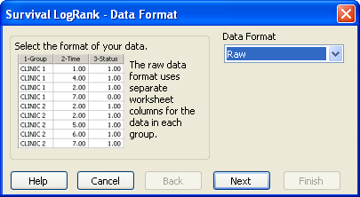
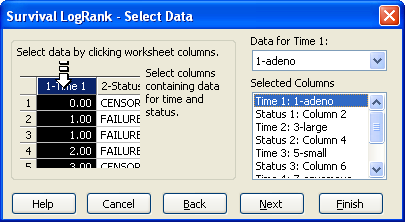
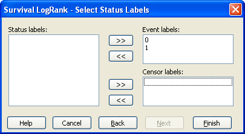

Running a Survival LogRank Analysis
To run a LogRank survival analysis you need to select data in the worksheet and specify the status variables.
To run a LogRank Survival analysis:
- If you want to select your data before you run the test then drag the pointer over your data. The columns must be adjacent and in the correct order (Time, Status for Raw data and Group, Time Status for Indexed data). For more information, see Arranging Survival LogRank Analysis Data.
- Select the Analysis tab.
-
In the SigmaStat group, from the
Tests drop-down list, select:
The Survival LogRank – Data Format panel of the Test Wizard appears.
-
From the Data Format drop-down list select either:
- Raw data format when you have groups of data in multiple Time, Status column pairs.
- Indexed data format when you have the groups specified by a column.
Figure 1. The Data Format Panel With Raw Data Format Selected  -
Click Next to display the Select
Data panel that prompts you to select your data columns. If you
selected columns before you chose the test, the selected columns appear in the
Selected Columns list.
Figure 2. The Select Data Panel for Survival LogRank Raw Data Format Prompting You to Select Multiple Time and Status Columns  -
To assign the desired worksheet columns to the
Selected Columns list, select the columns in the worksheet, or select
the columns from the Data for drop-down list.
The first selected column is assigned to the first row (Time 1) in the Selected Columns list, and the next selected column is assigned to the next row (Status 1) in the list. The number or title of selected columns appears in each row. Continue selecting Time, Status columns for all groups that you wish to analyze.
- To change your selections, select the assignment in the list and then select a new column from the worksheet. You can also clear a column assignment by double-clicking it in the Selected Columns list.
-
Click Next to choose the status variables. The status
variables found in the columns you selected are shown in the Status
labels in selected columns: box. Select these and click the
right arrow buttons to place the event variables in the
Event: window and the censored variable in the
Censored: window.
Figure 3. The Survival LogRank — Select Status Labels Panel of the Test Wizard Prompting You to Select the Status Variables You can have more than one Event label and more than one Censored label. You must select one Event label in order to proceed. You need not select a censored variable, though, and some data sets will not have any censored values. You need not select all the variables; any data associated with unselected status variables will be considered missing.
-
Click the back arrow keys to remove labels from the
Event: and Censored: windows.
This places them back in the Status labels in selected
columns: window.
SigmaPlot saves the Event and Censored labels that you selected for your next analysis. If the next data set contains exactly the same status labels, or if you are re-analyzing your present data set, then the saved selections appear in the Event: and Censored: windows.
-
Click Finish to create the survival graph and report.
The results you obtain depend on the Test Options that
you selected.
If you selected Indexed data format then the Select Data panel of the Test Wizard asks you to select the three columns in the worksheet for your Group, Time and Status.
-
Click Next to select the groups you want to include in
the analysis. If you want to analyze all groups found in the Group column then
select Select all groups. Otherwise select groups from
the Data for Group drop-down list. You can select subsets
of all groups and select them in the order that you wish to see them in the
report.
- Click Next to select the status variables as described above and then continue to complete the analysis to create the report and graph.